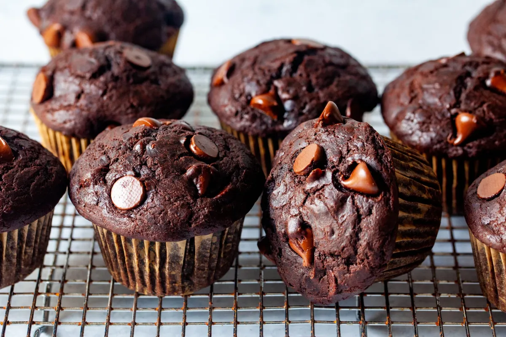

Choco Muffins

Description
Chocolate muffins that truly taste of chocolate and stay fresh for days are a rarity! This recipe delivers, thanks to some tidy tricks including hot milk to bloom the cocoa, and a little coffee to enhance the chocolate flavour (you won’t taste the coffee). Using brown sugar, oil, sour cream and less egg meanwhile is the secret to keeping the crumb ultra-moist and tender!
Ingredients
- 250g flour
- 200g granulated sugar
- 40g unsweetened cocoa powder
- 1 teaspoon baking soda
- Half teaspoon salt
- 300g chocolate chips
- 2 eggs
- 180g sour cream
- 120ml vegetable oil
- 120ml whole milk
- 1 teaspoon pure vanilla extract
Steps
- Preheat oven to 425°F (218°C). Spray a 12-count muffin pan with nonstick spray or use cupcake liners. This recipe yields about 14 muffins, so prepare a second muffin pan in the same manner or bake in batches and reserve leftover batter at room temperature for when the first batch is done.
- Whisk the flour, sugar, cocoa powder, baking soda, salt, and chocolate chips together in a large bowl. Set aside.
- Whisk the eggs, sour cream, oil, milk, and vanilla extract together until combined. Pour wet ingredients into dry ingredients and fold together with a silicone spatula or wooden spoon until completely combined. (Batter is quite thick, so I recommend a spatula or spoon over a whisk.) Avoid overmixing. The batter will be thick and sticky.
- Spoon the batter into liners, filling them all the way to the top. Bake for 5 minutes at 425°F then, keeping the muffins in the oven, reduce the oven temperature to 350°F (177°C). Bake for an additional 15-16 minutes or until a toothpick inserted in the center comes out clean. The total time these muffins take in the oven is about 20-21 minutes, give or take. (For mini muffins, bake 13-14 total minutes at 350°F (177°C) the whole time.)
- Cool muffins for 10 minutes in the pan, then transfer to a wire rack until ready to eat.
- Cover leftover muffins and store at room temperature for 5 days or in the refrigerator for 1 week.
Home